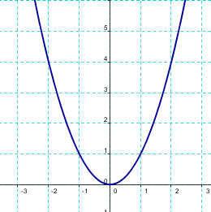
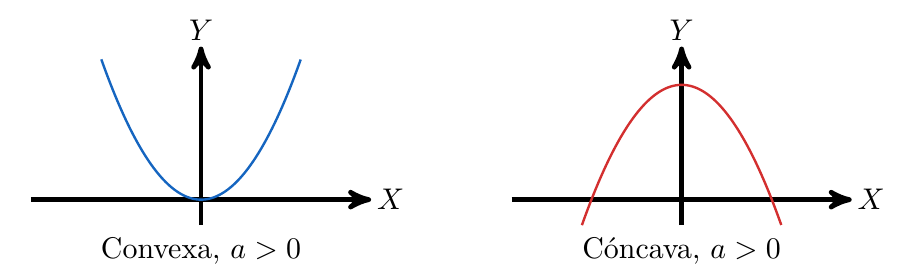

¿Qué es una función cuadrática?
Hasta ahora hemos visto funciones donde la variable independiente era \(x\). ¿Pero que ocurre si la elevamos al cuadrado? Obtenemos un nuevo tipo de función, denominada función cuadrática:
Definición: Una función cuadrática es una función de la forma \[y=ax^2+bx+c\]
Se caracteriza por tener forma de parábola.

Definición: Si \(a<0\) diremos que la función es cóncava, mientras que si \(a>0\) diremos que la función es convexa.

21. ¿Qué efecto tiene el signo del término de x^2?
Desliza para comprobar el efecto que tiene el signo del término de \(x^2\)
Desliza para comprobar el efecto que tiene el signo del término de \\(x^2\\)
","isScorm":0,"textButtonScorm":"Guardar la puntuación","repeatActivity":true,"itinerary":{"showClue":false,"clueGame":"","percentageClue":40,"showCodeAccess":false,"codeAccess":"","messageCodeAccess":""},"weighted":100,"cardsGame":[{"url":"../content/resources/20260315184536680ZNI//Captura_de_pantalla_2026-03-15_184632.png","author":"","alt":"","eText":"Término negativo (-x^2)","urlBk":"../content/resources/20260315184536680ZNI//Captura_de_pantalla_2026-03-15_184619.png","authorBk":"","altBk":"","eTextBk":"Término positivo 1 (x^2)","description":"Desliza","position":"50","vertical":false}],"textAfter":"","version":2,"evaluation":false,"evaluationID":"20260311183433MFWRJV","id":"20260315184536680ZNI","msgs":{"msgSubmit":"Enviar","msgClue":"¡Genial! La pista es:","msgCodeAccess":"Código de acceso","msgInformationLooking":"¡Genial! La información que estaba buscando","msgMinimize":"Minimizar","msgMaximize":"Maximizar","msgFullScreen":"Pantalla Completa","msgExitFullScreen":"Salir del modo pantalla completa","msgNoImage":"Pregunta sin imágenes","msgAuthor":"Autoría","msgAfterImage":"Imagen (después)","msgBeforeImage":"Imagen (antes)","msgNext":"Siguiente","msgPrevious":"Anterior","msgImage":"Imagen","msgScoreScorm":"La puntuación no se puede guardar porque esta página no forma parte de un paquete SCORM.","msgQuestion":"Pregunta","msgOnlySaveScore":"¡Solo puede guardar la puntuación una vez!","msgOnlySave":"Solo puede guardar una vez","msgInformation":"Información","msgOnlySaveAuto":"Su puntuación se guardará después de cada pregunta. Solo puede jugar una vez.","msgSaveAuto":"Su puntuación se guardará automáticamente después de cada pregunta.","msgYouScore":"Su puntuación","msgSeveralScore":"Puede guardar la puntuación tantas veces como quiera","msgYouLastScore":"La última puntuación guardada es","msgActityComply":"Ya ha realizado esta actividad.","msgPlaySeveralTimes":"Puede realizar esta actividad cuantas veces quiera","msgUncompletedActivity":"Actividad no completada","msgSuccessfulActivity":"Actividad superada. Puntuación: %s","msgUnsuccessfulActivity":"Actividad no superada. Puntuación: %s","msgTypeGame":"Antes/Después","msgPlayStart":"Pulse aquí para jugar"}}{kind=link}
{kind=link}
22. ¿Qué efecto tiene el valor del término independiente c?
Desliza para comprobar el efecto que tiene el valor del término independiente c
Desliza para comprobar el efecto que tiene el valor del término independiente c
","isScorm":0,"textButtonScorm":"Guardar la puntuación","repeatActivity":true,"itinerary":{"showClue":false,"clueGame":"","percentageClue":40,"showCodeAccess":false,"codeAccess":"","messageCodeAccess":""},"weighted":100,"cardsGame":[{"url":"../content/resources/20260315184838977D6L//Captura_de_pantalla_2026-03-15_185022.png","author":"","alt":"","eText":"Función con término independiente 1 (y=x^2+1)","urlBk":"../content/resources/20260315184838977D6L//Captura_de_pantalla_2026-03-15_185003.png","authorBk":"","altBk":"","eTextBk":"Función con término independiente 0 (y=x^2)","description":"Desliza","position":"50","vertical":false},{"url":"../content/resources/20260315184838977D6L//Captura_de_pantalla_2026-03-15_185157.png","author":"","alt":"","eText":"Función con término independiente -1 (y=x^2-1)","urlBk":"../content/resources/20260315184838977D6L//Captura_de_pantalla_2026-03-15_185003_1.png","authorBk":"","altBk":"","eTextBk":"Función con término independiente 0 (y=x^2)","description":"Desliza","position":"50","vertical":false}],"textAfter":"","version":2,"evaluation":false,"evaluationID":"20260311183433MFWRJV","id":"20260315184838977D6L","msgs":{"msgSubmit":"Enviar","msgClue":"¡Genial! La pista es:","msgCodeAccess":"Código de acceso","msgInformationLooking":"¡Genial! La información que estaba buscando","msgMinimize":"Minimizar","msgMaximize":"Maximizar","msgFullScreen":"Pantalla Completa","msgExitFullScreen":"Salir del modo pantalla completa","msgNoImage":"Pregunta sin imágenes","msgAuthor":"Autoría","msgAfterImage":"Imagen (después)","msgBeforeImage":"Imagen (antes)","msgNext":"Siguiente","msgPrevious":"Anterior","msgImage":"Imagen","msgScoreScorm":"La puntuación no se puede guardar porque esta página no forma parte de un paquete SCORM.","msgQuestion":"Pregunta","msgOnlySaveScore":"¡Solo puede guardar la puntuación una vez!","msgOnlySave":"Solo puede guardar una vez","msgInformation":"Información","msgOnlySaveAuto":"Su puntuación se guardará después de cada pregunta. Solo puede jugar una vez.","msgSaveAuto":"Su puntuación se guardará automáticamente después de cada pregunta.","msgYouScore":"Su puntuación","msgSeveralScore":"Puede guardar la puntuación tantas veces como quiera","msgYouLastScore":"La última puntuación guardada es","msgActityComply":"Ya ha realizado esta actividad.","msgPlaySeveralTimes":"Puede realizar esta actividad cuantas veces quiera","msgUncompletedActivity":"Actividad no completada","msgSuccessfulActivity":"Actividad superada. Puntuación: %s","msgUnsuccessfulActivity":"Actividad no superada. Puntuación: %s","msgTypeGame":"Antes/Después","msgPlayStart":"Pulse aquí para jugar"}}{kind=link}
{kind=link}
{kind=link}
{kind=link}
GeoGebra: Funciones cuadráticas
Observa estas funciones cuadráticas en Geogebra. ¿Te animas a crear algunas?